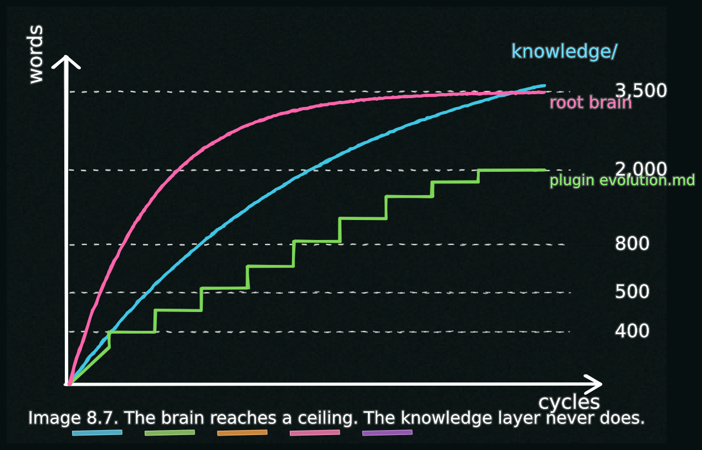

The Brain Stops Growing in Size
Essay 8.7 — From Apprentice to Architect, Part 7 of 9.
Essay 8.6 closed the operator’s three-stage arc — apprentice, journeyman, architect — with the prototype’s plugin-version spread as a concrete artifact. The arc raises the deepest claim of this series: at what point does the brain stop growing, and why doesn’t that stop the learning? This essay opens that claim.
A brain that grows without bound becomes its own problem. Every CLAUDE.md the agent reads at session start is a tax on the context window. A ten-thousand-word root brain plus several three-thousand-word plugin brains plus several five-thousand-word working CLAUDE.md files is half the agent’s working memory before any prompt is processed. The brain would drown the cognition. ⓘ
A scientist running a long-form research-protocol seed would feel this immediately if the brain were allowed to grow: every session opens with the cognitive overhead of last month’s protocol notes, last week’s pipeline tweaks, yesterday’s literature scan. Without the discipline that moves those compartments out of the brain and into knowledge silos, the scientist’s seed would spend most of its context budget remembering itself instead of doing the science. The discipline below is what keeps the brain readable for this session’s work.
The Forgetting Discipline
The size caps force the brain to do what your own brain does: forget the right things. Or more precisely, move the right things. The destinations below are the routing the prototype’s brain currently carries; your seed can re-route to fit its own work.
Root-brain overflow distills into focused skill files under .claude/skills/ in the brain root, with a one-line pointer left behind in the brain. Plugin CLAUDE.md overflow routes into that plugin’s slice of the knowledge directory, the body kept lean enough to read in one sitting. Working CLAUDE.md overflow gets handled at cycle close by the deflation gate from Essay 6.7, walking the file’s footer-to-body absorption and refusing to advance until enough has compressed. Memory-file overflow splits into multiple narrowly-scoped entries. Findings that don’t belong in any CLAUDE.md belong in plugin behavior — hardened into a hook — or in the topic-organized knowledge layer. ⓘ
The Equilibrium
The result is a brain that reaches a ceiling and stays there — even though the seed is learning constantly. The new learning is being placed in compartments outside the brain: the knowledge directory keeps growing, each plugin’s docs/evolution.md keeps narrating, the hooks keep hardening. The brain itself — the small set of files the agent reads at session start — finds an equilibrium and stays close to it. ⓘ
This is what I mean when I say the brain stops growing in size but never stops learning. The compression isn’t a limitation. It is the discipline by which the seed remains coherent across long timescales.
A mature seed is a small brain over a large knowledge layer.
The limit on this equilibrium is, again, friction: the operator who edits the brain carelessly during gmode without re-routing the overflow can grow the brain past its cap; CONDENSE will not retroactively shrink it. The architecture trusts the operator to do the routing; the discipline is the operator’s plus the cycle ceremony’s, not a single hard gate. ⓘ

A mature seed is a small brain over a large knowledge layer. The recursion that makes the equilibrium safe is next.
Essay 8.7 — From Apprentice to Architect, Part 7 of 9.
Previous: Essay 8.6 — The Maturation Arc — Apprentice, Journeyman, Architect — the operator’s three rough stages and the visible markers of each. Next: Essay 8.8 — A System That Safely Modifies Itself — the Tier-3 close, the recursive lock ceremony, and the rollback substrate.
Comments